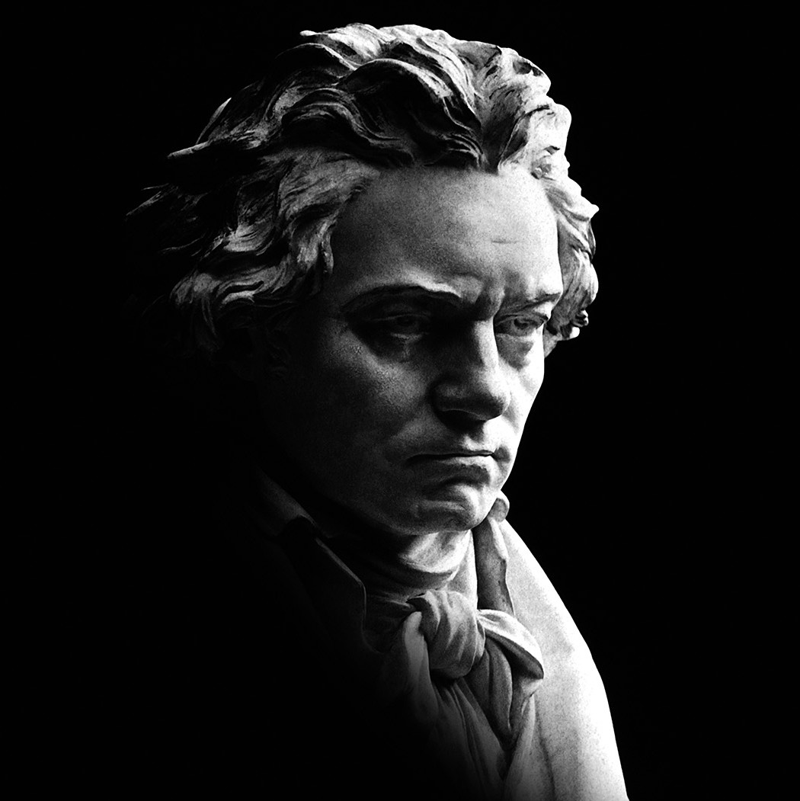

Bust of Beethoven by Hugo Hagen, 1892, Library of Congress, Washington,
D.C.
Ludwig van Beethoven
Ludwig van Beethoven (baptised 17 December 1770 - 26 March 1827) was a German composer and pianist. Beethoven remains one of the most admired composers in the history of Western music; his works rank amongst the most performed of the classical music repertoire and span the transition from the Classical period to the Romantic era in classical music. His career has conventionally been divided into early, middle, and late periods.